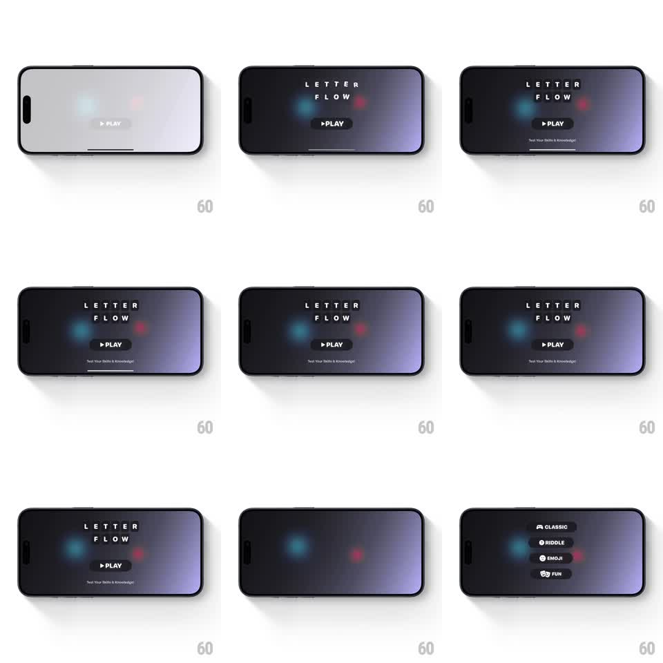

Media
Frame-by-frame

Rebuild this animation 1:1: Letter Flow's title screen - the "LETTER FLOW" logo letters flip in one by one like 3D tiles over a dark gradient with soft glowing orbs, then the PLAY button and tagline settle in.

Rebuild this animation 1:1: Letter Flow's title screen - the "LETTER FLOW" logo letters flip in one by one like 3D tiles over a dark gradient with soft glowing orbs, then the PLAY button and tagline settle in. ## Integration Integration: stack-agnostic spec - springs given as stiffness/damping, timed motions as duration + curve; map every value to your framework and animation library of choice. ## Scene Landscape dark screen: a vertical gradient (deep navy to violet to warm amber) with two soft out-of-focus glowing orbs (blue, red). Center: "LETTER FLOW" in wide-tracked white capitals on two lines, a dark "PLAY" pill button with a play triangle, and the tagline "Test Your Skills & Knowledge!". ## Motion spec Pattern: 3D letter-tile flip reveal, ~1.6s. - Flip: each letter rotates in on the X axis (rotateX 90deg -> 0, 400ms, ease-out) with a slight overshoot (-8deg), staggered 60ms left to right per line, the second line delayed 200ms. - Glow: as each letter lands, a faint light sweep passes across it (150ms). - PLAY: the button scales in (0.8 -> 1.06 -> 1, spring ~360/18) after the last letter, the tagline fading in below it (250ms, +150ms). - Ambient: the orbs drift slowly (20px over 8s) and breathe (opacity 0.6 -> 0.8). ## Calibration - Letters flip as if on individual tiles - the rotation origin is each letter's baseline center. - Tracking stays wide and even; no letter-spacing animation. ## Reduced motion Logo, button, and tagline fade in together (300ms). ## Don't miss - The background gradient shifts subtly between states (violet to amber) - it is part of the scene, not a static fill. - The PLAY triangle is inside the pill, left-aligned to the label.